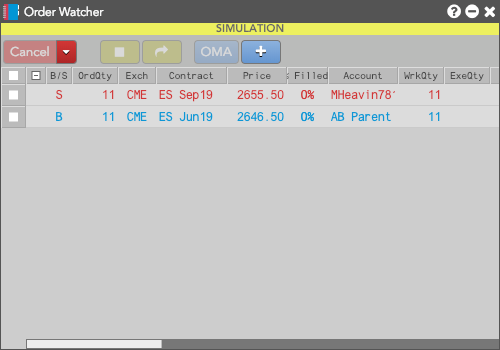

The Order Watcher widgets lets you quickly create Order Management Algos (OMAs) from multiple existing orders by adding the orders to the widget, applying an OMA algo and launching the algo with the selected orders. You no longer need to search through your Order Book to locate the orders you want to use for an OMA algo.
